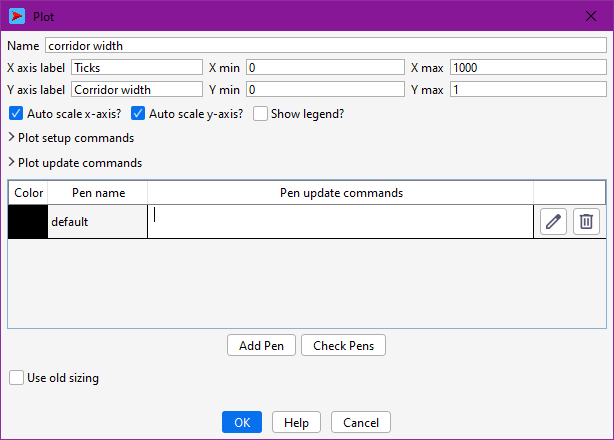
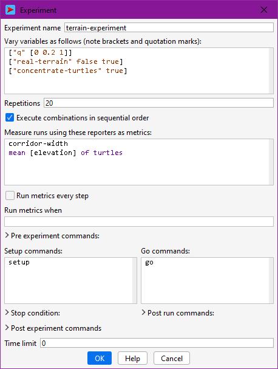

EES 4760/5760
Agent-Based and Individual-Based Computational Modeling
J. Magnolia Gilligan
Download the following files from the Download page on the class web site:
butterfly_class_06a.nlogox
You should have downloaded:
Various versions of NetLogo butterfly models.
A digital elevation map of real hills
https://ees4760.jmgilligan.org/models/class_06/ElevationData.txt
Start NetLogo and load
butterfly_class_06a.nlogox
On the interface tab, add a plot

On the code tab, add a line to go to plot the
corridor width
plot corridor-widthAdd a button to export the plot to a file:
export-plot "Corridor-width" (word "corridor-output-for-q-" (precision q 2) ".csv") precision q 2 rounds q off to two decimal
places.word combines several different things into a single
text string: corridor-output-for-q-0.40.csv”.
Parentheses tell NetLogo which things word should
apply to:
(word a b c d ... q)will combine the values of variables a, b,
c, d, …, q into a single text
string.
Add a button to increment q by 0.1
Add a switch concentrate-turtles and edit
to setup to change the code for crt 500 to
include this:
ifelse concentrate-turtles
[
setxy x0 + random 10 - 5 y0 + random 10 - 5
]
[
setxy random-pxcor random-pycor
]If your model is having problems, compare it to
butterfly_class_06b.nlogox
Open BehaviorSpace and create an experiment
terrain-experiment
real-terrain between false and
true
q from 0 to 1 in steps of 0.2concentrate-turtles to true
q.corridor-width and
mean [elevation] of turtles at the last tick only
q for each terrain
behaviorspace-results”Turtles leave trails with the pen (because you told them
pen-down when you created them in to-setup).
The pens are the same color as the turtles, so it’s hard to tell the
difference between turtles and trails.
It would be nice to color patches they visited yellow so you could erase the pen trails and see the red turtles contrasting with the yellow visited patches.
Open “butterfly_class_06b.nlogox”
Add code to color patches yellow when a turtle visits them:
At the end of to move, add
set pcolor yellowAdd a button to the interface to erase the pen trails:
clear-drawing and the
display name “erase trails”Open butterfly_class_06c.nlogox
In to go, after the turtles move add:
if (count patches with [visited?]) != (count patches with [pcolor = yellow])
[ print "# visited patches does not match # yellow patches." ]show Indicates which turtle or patch used it. Ends the
line after the command.print Ends the line after the command.type Does not end the line.write Does not end the line. Text strings are
quoted.output-showoutput-printoutput-typeoutput-writeIn to move replace the ifelse block
with this:
ifelse random-float 1 < q
[ ; move uphill
let current-elevation elevation
move-to max-one-of neighbors [elevation]
if elevation < current-elevation
[ show "Turtle is moving downhill." ]
]
[ move-to one-of neighbors ] ; move randomlyIn to go replace
ask turtles with [not finished?] [move]with
ask turtles [move]Set q to 1 on the slider
Turtles should always move uphill. Why do they sometimes move downhill?